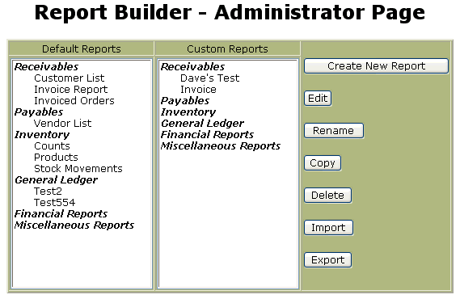
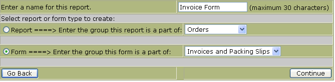
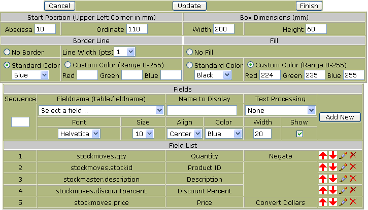
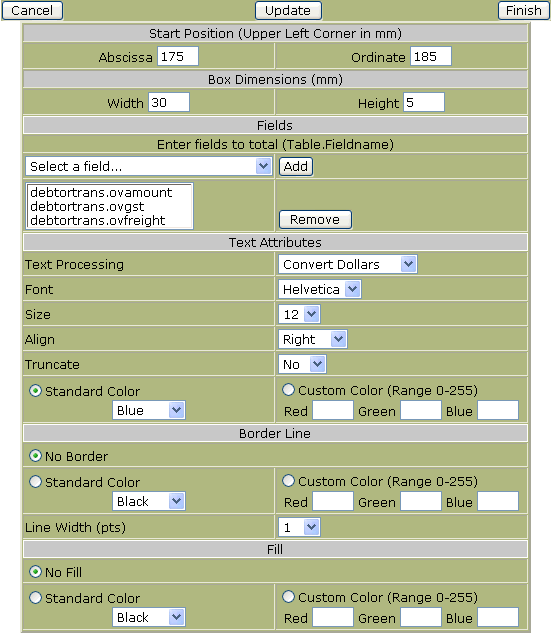
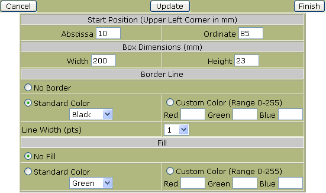
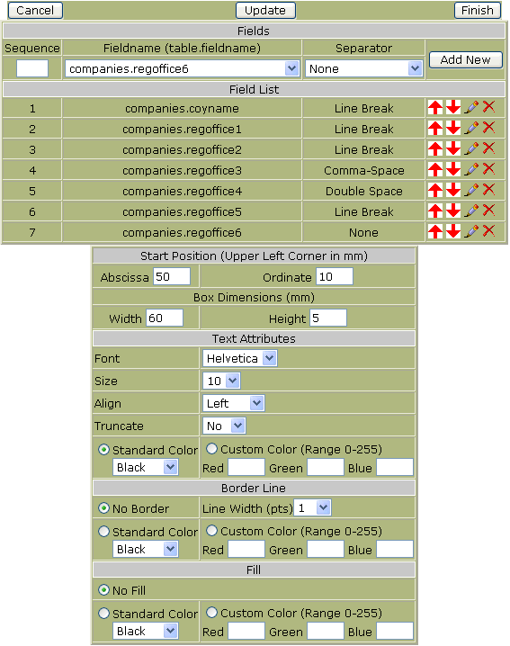
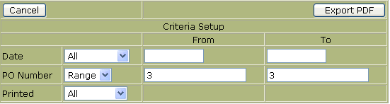

Revision History
Introduction
What is Report Builder - Reports
What is Report Builder - Forms
Administrator Page
Importing and Exporting
Editing, Copying, Renaming and Deleting Reports/Forms
How Do I Create a New Report?
How Do I Create a New Form?
Viewing your report/form
Passing Parameters to Forms
The report builder tool provides administrators with the ability to create, copy, edit, delete, import and export database driven reports and forms. Pre-defined reports are stored in the language directory labeled specified for the given language. After installing the plug-in, there may be several standard reports and forms installed. More reports or forms can be added by importing them from either the host servers reports directory or uploading them directly from the browser. Standard reports can be viewed and customized through the Report Viewer. Forms may only be edited through Report builder. The Report Viewer manual covers the output procedures necessary for exporting or viewing reports created with the report builder.
NOTE: DETAILED UNDERSTANDING OF THE DATABASES AND FIELDS IS REQUIRED TO USE REPORT BUILDER! FAILURE TO DO SO WILL RESULT IN ERRORS OR NON-FUNCTIONAL REPORTS AND FORMS.
There are several differences between reports and forms. They are summarized in the table below:
Reports |
Forms |
|
|
Report Builder is a web based tool that gathers the necessary webERP database information to generate company reports. Attributes such as page setup, fields retrieved, and filter criteria are entered to provide the specific information desired. Reports are generated with a standardized output but still have configurable columns and options to allow for flexibility. Every report created with this tool can be customized and formatted by the users to create custom reports. Every report consists of the following general format:
Header: Consists of four lines and the body heading. The first three lines are Company Name, Title 1, and Title2. Company name cannot be changed but it’s attributes, such as font, color, whether to show or not, can be altered. Title 1 and Title 2 are specified in each report and default to ‘%reportname%’ and ‘Report Generated %date%’, respectively. Their attributes can also be changed. The forth header line displays the filter parameters specified for each report. This line will show for all reports. Finally, the table heading which is derived for the fields selected to show sorted by the column they show in. The table heading descriptions are included in the header of each page so every page lists the data field titles and their respective positioning within each column.
Body: Lists the data elements returned for the report. They appear in columns specified from the criteria setup for each report. Each column may contain one or more query results. The maximum number of columns is eight. A flag to truncate is available to limit the data to a single row, truncating the remaining information if not needed for the report.
Footer: Lists the page count out of the total number of pages. This field will always show and has no user configurable attributes.
Report builder also will build form templates used in scenarios where reports will not allow the flexibility needed for formatting the output. Invoices, Purchase Orders, Checks, and Collection Letters are good examples of forms. Forms are more complex to generate than reports but allow the user added flexibility of positioning, font attributes, images, and enhanced data content. There are also certain requirements when building a form that need to be adhered to for the form to display properly. These will be discussed in the section on building a form.
In this manual, we will use an invoice form for demonstration purposes. An invoice form contains several pieces of database information, static and dynamic, graphics, images and page numbering. All will be demonstrated in the example.
The construction of a form consists of three parts similar to reports; header, body, and footer.
Header: The header is more complex in forms in that most of the information is processed as the header. Company name, static text, graphics and images all are handled in the header. This is because they are static through every page of the form. They can, however, be located anywhere on the page.
Body: The body typically contains a table of dynamic information. For our invoice example, the item description, quantity, and price will make up our body data. The tables positioning, size and format attributes are all flexible. The information for the body will continue to subsequent pages if necessary.
Footer: The footer typically handles the totaling of data. In our invoice example, we want to total all the items ordered, add freight and list the invoice total. This cannot be completed until all the data is processed which might span several pages. Therefore, all fields that are of type 'data total' fields display as 'continued' until the last page where the final total is inserted.
The administrator page is the starting point for all report and form manipulation. Upon entry, this page displays the current standard reports loaded into the database as well as any customized reports generated by the webERP users. Forms are listed by the Form Group they are a part of. From here, there are several choices for report/form manipulation. They will be covered in the following sections.

An important feature of the Report Builder is it’s ability to import and export report and form parameters. This feature allows one user to generate a report on their webERP system and export it to his local file system where it can then be e-mailed, transferred or imported into another webERP system. There is also a provision to alter the naming within the report to allow for language translations for the field descriptions.
There are two types of importing types supported. First, packaged standard reports shipped with webERP are stored in the /languages/en_US/ directory (or the language directory specified in the appropriate translation) where they can be selected for import. Entering a report name and selecting ‘Import’ will install the report into the group defined in the report file with the report file name specified. If the report filename is left blank, the default report name specified in the import file will be used. Second, a report file can be uploaded through the browser and imported into the group specified in the report file. If a report name is specified, the report will be saved under the specified name, but if left blank, the default report name contained in the uploaded file will be used.
NOTE: Standard reports will be imported into the Standard Reports listing and custom reports will be imported into the Custom Reports listing. The report type is specified in the uploaded report file.
Exporting downloads the report file to the uses browser and can either be viewed or saved. The file format is type ‘text’ and must be saved as a text file. Report Builder uses the extension .rpt.txt for files contained in the distribution package.
Report and form files can be edited to support multi-language users. The text file my be edited with any text editor. Only modify the descriptions between the single quotes and leave the remaining portions of the file untouched. A translation section example is shown below:
/* Language Fields. */
/* Only modify the language portion between the single quotes after the colon.
*/
/* Report Name and Title Information: */
ReportName:'Invoice'
Title1Desc:'%reportname%'
Title2Desc:'report generated %date%'
/* Report Field Description Information: */
FieldDesc0:'Branch ID'
FieldDesc1:'Order Number'
FieldDesc2:'Quotation'
FieldDesc4:'Order Number'
FieldDesc5:'Order Date'
FieldDesc6:'Branch ID'
FieldDesc7:'Customer Reference'
FieldDesc8:'Deliver To Name'
FieldDesc9:'Quantity'
FieldDesc10:'Part Number'
FieldDesc11:'Unit Price'
FieldDesc12:'Customer Name'
FieldDesc13:'Address 1'
FieldDesc14:'Address 2'
FieldDesc15:'City'
FieldDesc16:'State'
FieldDesc17:'Postal Code'
FieldDesc18:'Country'
FieldDesc19:'Delivery Date
'
FieldDesc20:'Customer Branch ID'
FieldDesc21:'Order Date'
FieldDesc22:'Order Number'
FieldDesc23:'Customer Name'
FieldDesc24:'Order Number'
/* End of language fields. */
In this example, the report name is ‘Invoice’. To change the report name to Invoice Register, simply change the word ‘Invoice’ with ‘Invoice Register’. Language changes can also be made here for translation and the report saved in the languages directory appropriate for the language used.
Standard and Custom reports can be edited by simply selecting the report to edit and pressing Edit. The following several menus are the same as defined in the Create a new report below. The report builder is the only place that standard reports can be changed. In the Report Viewer, the user is limited only to the selection of criteria, no page setup or field property changes are allowed. In the Report Viewer, custom report modifications are more flexible where the user can adjust the page properties, field properties and criteria. The Report Viewer will not allow the user to add, change or delete and fields or criteria, just their properties.
Reports may be copied by selecting a report and pressing Copy. Enter the name of the new report and the group it will be displayed with. All copied reports are saved as the same type of report as the original, standard or custom.
Renaming a report is similar to copying a report except the report is overwritten with the new report name and the report group cannot be changed. If you need to move a report to a different group, copy the report to that group and delete the original report.
To delete a report, select the report and press Delete. A confirmation window will pop-up to confirm the deletion before the report is removed. If a report is accidentally deleted, it may be possible to import it back again if it was a report from the distribution or exported and saved as backup.
There are five steps to building a report. They are:
The best way to demonstrate how to build a report would be to show an example. We’ll build a report called: Invoice Report. First we’ll need to access the report builder. It is found under the Setup menu under the General category titled Report Builder Tool. Once there press the Add New button.
For our report, enter Invoice Report into the Enter a name text box. Also, we need to specify that it is a report by selecting the Report radio button. We now need to place this report under the proper category so select Receivables from the drop down menu for the group this report is a part of.
Press Continue when all information has been entered.
IMPORTANT: At this time a record will be added to the reports table and will appear in the list of available reports. Users can choose this report to generate but the result will be a ‘No data in this report’ warning. The report should be deleted if the report builder process is not completed for a given report.
The next screen allows us to alter some of the default settings for the layout of the report. Most fields are self explanatory but there are a few notes to remember.
Page layout: You should set the default paper size to what you really want it to be. It cannot be changed when viewing standard reports. You may return here to make further changes by editing the report after you finish building the report testing the output.
Column Width: If you have a pretty good idea of how many columns you want your report to be and the width, you can enter them here. If you leave the defaults for now and finish your report you may go back and change the column widths after you test you finished product at a later time.
Titles: Data will appear as it is typed but there are system generated tags to automate the report. This list is current as of this writing but may change as more tags are added.
Tag |
Description |
| %date% | Inserts the current date into the title in the place the tag appears within the title string. |
| %reportname% | Inserts the report name stored in the database. |
NOTE: Margin and column widths are in millimeters, font sizes are in points.

After all information has been entered, press Continue to enter the database information.
This form allows us to specify the tables and linked tables that are used to build the query. These fields generate what will become the second part of the query, “FROM table1 INNER JOIN table2 ON table2linkequation INNER JOIN table3 ON etc”.
NOTE: IMPORTANT: KNOWLEDGE OF THE DATABASE TABLES AND STRUCTURE IS REQUIRED.
Enter the data in the boxes as shown below. Only one row of data may be entered at a time in sequence. After each table/Link Equation row has been entered, press the Update button to validate the table and commit the link equation. The form will reload with data just entered and will then allow the next Table/Link Equation to be entered. The fields are case sensitive.
Text Box Name |
Data to Enter |
| Table Name - Primary | salesorders |
| Table Name - Second | salesorderdetails |
| Link Equation - Second | salesorders.orderno = salesorderdetails.orderno |
| Table Name - Third | debtorsmaster |
| Link Equation - Third | salesorders.debtorno = debtorsmaster.debtorno |
| Table Name - Fourth | custbranch |
| Link Equation - Fourth | salesorders.branchcode = custbranch.branchcode |
NOTE: After the data has been entered, the tool will validate the data by attempting to retrieve a single row from the query. If a single row cannot be accessed from the database, you cannot progress past this point.
NOTE: If you get stuck here, remember that the report exists in the standard reports list and should be deleted to prevent users from running the report.

After all information has been entered, press Continue to enter the possible fields to query.
This form will add the allowed fields to a query build list. These fields generate will become the first part of the query, “SELECT field list here”. At least one field needs to be entered to make a valid report. Up to the total number of fields in the linked databases provided in step 3 are allowed. In practice, however, a smaller list usually works the best. Each field has it’s own attributes. They can be re-sequenced, force a column break, set to show and marked to track a running total. Only the fields added here will appear in the report viewer list for selection.
PRACTICAL NOTE: It’s a good idea to pre-order the fields in a logical order in the way you want to the data to appear. Also, selecting the fields to show combined with the column breaks should result in a default report of eight columns or less so they can be displayed directly from the standard report without modifications.
Order: The order determines the sequence of the generation of the field list. If an order number is entered that already exists, it will be inserted into the list in the order specified and the remaining fields will be bumped down one position. If the order number is left out, it will append the new field to the end of the list. Order numbers begin with 1.
Fieldname: This text field needs to match the exact table and fieldname in the database. The fieldname is entered in the form ‘table.fieldname’ to provide absolute identification of the field to be retrieved. A test to retrieve a single line form the database with the fieldname and display description will be performed to validate the input. If the fieldname is incorrect or the display description is blank, an error will result.
Name to Display: The description can be any English (or other language) description. This is the ID assigned to the fieldname. It will appear on the report heading and links directly to the table.fieldname entry. Special characters are allowed but not recommended.
Break: This field specifies whether there should be a column break after this entry is displayed. The field can only be altered in the Report Viewer for custom reports so it’s best to get it right in the standard report to generate the desired output. It is a good idea to group certain fields in the same column. For example, addresses typically read better if they appear in a block versus spread out over several columns. Also, the report is limited to eight columns to display. Most standard reports will list more than eight fields and using column breaks will help organize the output.
Show: Identifies the fields to display. Only fields that are checked to show will appear in the report. It is a good practice to show the fields that you want to appear in the standard report but not necessarily all fields. The user can decide what pieces of data they want and alter this field only in custom reports. If no fields are identified to show, the report viewer will generate a warning message ‘No data to display’.
Total: Specifies if a running total should be kept. Can be set for any numeric field. If grouping is set, the report viewer will also track subtotals by the group selected as well as the total for all field retrieved in the report.
Let’s add some fields to our report. We’ll use an abbreviated list to show the general idea. If more fields are needed or need to be edited, the report may be edited and fields added or deleted as necessary. Enter the fields as shown in the table below.
Sequence |
Fieldname |
Name to Display |
Break |
Show |
Total |
1 |
salesorders.orderno | Order Number | No |
Yes |
No |
2 |
salesorders.orddate | Order Date | No |
Yes |
No |
3 |
salesorders.branchcode | Branch ID | Yes |
Yes |
No |
4 |
salesorders.customerref | Customer Reference | No |
Yes |
No |
5 |
salesorders.deliverto | Deliver To Name | Yes |
Yes |
No |
6 |
salesorderdetails.quantity | Quantity | No |
Yes |
Yes |
7 |
salesorderdetails.stkcode | Part Number | No |
Yes |
No |
8 |
salesorderdetails.unitprice | Unit Price | Yes |
Yes |
Yes |
9 |
debtorsmaster.name | Customer Name | No |
Yes |
No |
10 |
debtorsmaster.address1 | Customer Address 1 | No |
No |
No |
11 |
debtorsmaster.address2 | Customer Address 2 | Yes |
No |
No |
12 |
debtorsmaster.address3 | City | No |
No |
No |
13 |
debtorsmaster.address4 | State | No |
No |
No |
14 |
debtorsmaster.address5 | Postal Code | No |
No |
No |
15 |
debtorsmaster.address6 | Country | Yes |
No |
No |
16 |
custbranch.deliverydate | Delivery Date | No |
Yes |
No |
17 |
custbranch.custbranchcode | Branch ID | No |
No |
No |
If you make an error, the buttons on the right of each row entered allow you to edit, re-sequence, or delete a row. Your form should like something like this:

After all information has been entered, press Continue to enter the filter criteria.
This form builds the options for date selection, grouping, sorting, and filtering for the standard report. These fields generate what will become the where of the query, “WHERE criteria1 AND criteria 2 AND etc ORDER BY grouping, sorting”. Here’s how each field works:
Date: If your report has a date field that is displaying, this is where you will specify the type of data choices available. Many are just quick selections to standard periods of time. The two most generic, ALL and RANGE allow the user to quickly view every entry in the database or specify the particular date range they are interested in. For all date selections (except ALL), the table name and fieldname ‘table.fieldname’ must be entered into the Date Fieldname text box or an sql error will result. The fieldname will be tested with the selected tables to validate the input. A default date can be chosen hare as well. For example, If a standard report named Today's Sales is being generated, you may still want to allow the user to select a date range but you want the date to first come up with Today as the default. In this case, you would select as many date choices as you wish but upon entry to the report, Today will be the default.
NOTE: If your report doesn’t have any date fields, or doesn’t depend on date information, either de-select all the check boxes in which case the date options will not be displayed in the report viewer or just check the ALL box to show the date option with only a single choice available.
Truncate Long Descriptions: This is handy for summary reports or when a field is long and you want to avoid column wraps of the text. Checking this box truncates any field that will exceed the column width to keep it to one line. This feature also truncates the column headings.
Grouping Fields:
Sorting Fields: Grouping Fields and Sorting Fields are similar. The main
difference being the grouping is specified earlier in the ORDER BY portion of
the sql string and subtotaling is calculated and displayed on the report. If no
groupings are specified, the option will not show in the Report Viewer criteria
selection form.
Default: Checking the default box will pre-select a particular group and/or sort field. These choices may be altered in both the standard reports and the custom reports but saves time if your target report is designed to have a specific grouping or sorting.
Filter Criteria: The filter criteria allows for user options to further refine their search. There are no limit to the number of options but usually 3-4 work the best. The type of criteria must make sense relative to the field. If the field is a text field, the all:range criteria work best. For yes/no fields, the all:yes:no, printed:unprinted, etc work the best.
NOTE: The Grouping Display Fieldname must match exactly the Fieldname in the Field List for the Group Subtotal to function properly. The report fields will still be grouped properly but the subtotals and group breaks will not be displayed.
Let’s fill in our report with the following data:
1. Check all the date boxes except the ‘to-date’ boxes. This will give the user
more than enough choices.
2. Enter salesorders.orddate in the Date Fieldname text box.
3. Check No in Truncate Long Descriptions. We can change it later if necessary.
4. Enter the Grouping as follows:
Sequence |
Fieldname |
Display Description |
Default |
1 |
salesorders.orddate | Order Date | No |
2 |
salesorders.orderno | Order Number | No |
5. Enter the Sorting as follows:
Sequence |
Fieldname |
Display Description |
Default |
1 |
debtorsmaster.name | Customer Name | Yes |
2 |
salesorders.orderno | Order Number | No |
6. Enter the Field Criteria as follows:
Sequence |
Fieldname |
Display Description |
Type of Criteria |
1 |
salesorders.branchcode | Branch ID | All:Range |
2 |
salesorders.orderno | Order Number | All:Range |
3 |
salesorders.quotation | Quotation | All:Yes:No |
NOTE: Notice that we allow the user to filter based on salesorders.quotation even though the field is not listed in the Field List. The Report viewer will still use the field to filter the data even though you may not want the field to display. This is usually not a good idea in practice. The output report header will indicate that the filter criteria included quotation if Quotation: Yes or Quotation: No is selected to show that the report only contains filtered data.
The form should look something like this:

That’s it, click on Finish to exit the report builder and we’re ready to see our result.
There are five steps to building a form. They are:
The best way to demonstrate how to build a report would be to show an example. We’ll build a report called: Invoice Form. First we’ll need to access the report builder. It is found under the Setup menu under the General category titled Report Builder Tool. Once there press the Add New button.
For our form, enter Invoice Form into the Enter a name text box. Also, we need to specify that it is a form by selecting the Form radio button. We now need to place this form under the proper category so select Invoices/Packing Slips from the drop down menu for the group this form is a part of.

Press Continue when all information has been entered.
IMPORTANT: At this time a record will be added to the forms table and will appear in the list of available forms. Users can choose this form to generate but the result will be a ‘No data in this form ’ warning. The form should be deleted if the report builder process is not completed for a given form.
The next screen allows us to alter some of the default settings for the page layout of the form. Most fields are self explanatory but there are a few notes to remember.
Page layout: Set the settings desired for the page layout. Each displayed entry for the page are handled individually in the field setup form. You may return here to make further changes by editing the form after you finish building the form testing the output.

After all information has been entered, press Continue to enter the database information.
This form allows us to specify the tables and linked tables that are used to build the query. These fields generate what will become the second part of the query, “FROM table1 INNER JOIN table2 ON table2linkequation INNER JOIN table3 ON etc”.
NOTE: IMPORTANT: KNOWLEDGE OF THE DATABASE TABLES AND STRUCTURE IS REQUIRED.
Enter the data in the boxes as shown below. Only one row of data may be entered at a time in sequence. After each table/Link Equation row has been entered, press the Update button to validate the table and commit the link equation. The form will reload with data just entered and will then allow the next Table/Link Equation to be entered. The fields are case sensitive.
Text Box Name |
Data to Enter |
| Table Name - Primary | salesorders |
| Table Name - Second | salesorderdetails |
| Link Equation - Second | salesorders.orderno = salesorderdetails.orderno |
| Table Name - Third | debtorsmaster |
| Link Equation - Third | salesorders.debtorno = debtorsmaster.debtorno |
| Table Name - Fourth | custbranch |
| Link Equation - Fourth | salesorders.branchcode = custbranch.branchcode |
NOTE: After the data has been entered, the tool will validate the data by attempting to retrieve a single row from the query. If a single row cannot be accessed from the database, you cannot progress past this point.
NOTE: If you get stuck here, remember that the report exists in the standard reports list and should be deleted to prevent users from running the report.

After all information has been entered, press Continue to enter the fields to display.
This form will add the allowed fields used to generate the form output. Fields may be graphic, image, data or static text. At least one field needs to be entered to make a valid form. Up to the total number of fields in the linked databases provided in step 3 are allowed for data fields. In practice, however, a smaller list usually works the best. Each field has it’s own attributes, including placement, font style, size, color and alignment and more depending on the field chosen. More on field types later.
PRACTICAL NOTE: It’s a good idea to pre-order the fields in a logical order in the way you want to the data to appear.
Order: The order determines the sequence of the generation of the field list. If an order number is entered that already exists, it will be inserted into the list in the order specified and the remaining fields will be bumped down one position. If the order number is left out, it will append the new field to the end of the list. Order numbers begin with 1.
NOTE: In forms, the order is not terribly important since each field contains it's own positioning information.
Name to Display: The description can be any English (or other language) description. This is the ID assigned to the fieldname. It will appear on the report heading and links directly to the table.fieldname entry. Special characters are allowed but not recommended.
Show: Identifies the fields to display. Only fields that are checked to show will appear in the form. It is a good practice to show the fields that you want to appear in the standard report but not necessarily all fields. The user can decide what pieces of data they want and alter this field only in custom reports. If no fields are identified to show, the report viewer will generate a warning message ‘No data to display’.
Type: Specifies the type of field. We will go over each type in detail below.
Data lines contain a single piece of information from the database query. A dropdown list of available fields is shown along with the attributes of the text to be displayed.

Data Blocks are a special case of data lines that concatenate several fields from the database with a separator value. Data blocks are ideal candidates for addresses where fields need to be near each other but vary in length and how they are separated from each other. The example below is for an en_US address where address3-5 are city, state and postal code, respectively and address 6 is the country. The output will be displayed as follows:
Widgets International (name)
1234 Main Street (address1)
Suite #3 (address2)
Anytown, CA 90019(address3), (address4) (address5)
US (address6)

Data Tables are the main part of the form where data lists are displayed. The table has a start position along with width and height information. The border line (if specified) will be drawn around the perimeter of the table as well as between each column of data. The Fill information will separate each line of information with alternating White-Fill Color highlights between every line (similar to line separation in reports). If no fill is specified, the form background will be white. Each data line in the table will make up a single column. Multiple data line cannot appear in the same column (unlike reports where column breaks are allowed). Each data item can have it's own font attributes and can be processed through a text processing option. The total of the column widths of the displayed data (with Show checked) should be equal to the total width of the table for the output to display properly. The Name to Display information will make up the heading of each respective table column and will appear as the heading of the table on every page generated.

Data Totals take all the fields entered (3 in this example) and pull the total from the database for a given form. If the form is multipage, the words 'Continued' will be displayed on every page except the last where the form totals will be substituted. If the word 'Continued' appear, the user knows that the form is multipage. The page number tracks and displays the current page as the form is being generated.

Fixed Text Fields display a single line of text. It should be used for static form information such as labels and messages that are not generated by a database query.

Images of type jpg, jpeg and png are accepted. An image may be selected from the current list of available images or uploaded through the browser. The abscissa and ordinate must be specified. If the width and height are left blank, the image retains it's original size and aspect ratio. If either a width or a height are specified, but not both, the image is sized to fit the specified dimension and the other is autosized to maintain the aspect ratio. If both width and height are specified, the image is size to fit the width and height provided.

Rectangles may be generated with many attributes. A rectangle without a border could be used to shade an area of the form. A rectangle with a border and no fill can be used to outline a block of information.

Lines can be drawn vertically, horizontally or diagonally. Colors and line widths are also programmable.

Company Data Lines are similar to Data Lines except the field list is derived from the companies database.

Company Data Blocks are similar to Data Blocks except the field list is derived from the companies database.

The Page Number field prints only the page number in numeric format (not: Page X of Y). If the wording 'Page ' is necessary, a new Fixed Text Field will be necessary to generate the prefix for the page number.
NOTE: There is a limitation between report builder and FPDF with the page number alias. Report builder will allow multiple forms to be built in a single query. Since multipage forms are possible, the page total based on each form page break cannot be calculated in real time by report builder. FPDF has an alias to track the total number of pages but does so for the entire PDF file. For example, if the user asks to generate all invoices for 'Today', there will probably be more than one. Also, one or more may be multipage. The FPDF alias will provide the total number of pages for the entire form build (all invoices for Today) and not for each invoice form. Report builder only knows what page it is working on and not how many total pages are in each individual invoice. Therefore, only the report builder current page number is generated with this field and the total number of pages of the form is not available. The 'continued' feature for totals indicates that a form is multipage.

The details of each field are too numerous to reproduce here. The best way to review the fields in our example would be to import the form and examine the fields of interest. If you make an error, the buttons on the right of each row entered allow you to edit, re-sequence, or delete a row. Properties for each field can be edited as well. An abbreviated field list is shown below:

After all information has been entered, press Continue to enter the filter criteria.
This form builds the options for date selection, page break field, and filtering for the form. Here’s how each field works:
Date: If your report has a date field that is displaying, this is where you will specify the type of data choices available. Many are just quick selections to standard periods of time. The two most generic, ALL and RANGE allow the user to quickly view every entry in the database or specify the particular date range they are interested in. For all date selections (except ALL), the table name and fieldname ‘table.fieldname’ must be entered into the Date Fieldname text box or an sql error will result. The fieldname will be tested with the selected tables to validate the input. A default date can be chosen hare as well. For example, If a standard report named Today's Sales is being generated, you may still want to allow the user to select a date range but you want the date to first come up with Today as the default. In this case, you would select as many date choices as you wish but upon entry to the report, Today will be the default.
NOTE: If your report doesn’t have any date fields, or doesn’t depend on date information, either de-select all the check boxes in which case the date options will not be displayed in the report viewer or just check the ALL box to show the date option with only a single choice available.
Form Page Break Field: Form Page Break Fields specify the field that is used to separate forms. For our invoice example, the invoice number would be the logical form break. This will force a new form for every invoice number within the range defined in the criteria and date parameters.
Filter Criteria: The filter criteria allows for user options to further refine their output. There are no limit to the number of options but usually 3-4 work the best. The type of criteria must make sense relative to the field. If the field is a text field, the all:range criteria work best. For yes/no fields, the all:yes:no, printed:unprinted, etc work the best.
The form should look something like this:

That’s it, click on Finish to exit the report builder and we’re ready to see our result.
Reports are viewed through the Report Viewer. Report Viewer is covered in another manual but we’ll take a quick look to see how our report turned out. From the main menu, select Receivables, then Invoice Report under the Inquiries and Reports Menu. The criteria page is displayed where we can alter the filter criteria. For now, press Generate PDF and view our report. If the columns need to be altered or fields re-arranged, go back to the Report Builder and edit the necessary entries. Once the report is completed and you’re satisfied with the format of the output, it’s best to export the report (it's text file) and save it locally or in the standard reports directory on the server in case it gets deleted accidentally.
Forms may be called directly from scripts by passing an id and criteria parameters. the parameters are assigned the variables cr[x] where [x] is replaced by the parameter to be assigned. Parameter 0 (zero) is reserved for the date field. Parameters 1-9 correspond to the order in which the criteria are ordered in the form. An example href tag might look like:
<a href="reportwriter/FormMaker.php?id=prch:po&cr0=a&cr1=Range:3:3">
Variable 'id': The id definitions correspond to the index value of the variable $FormGroups in the file /reportwriter/admin/defaults.php. the current definition codes are:
gl:chk = Bank Checks
ar:col = Collection Letters
ar:cust = Customer Statements
gl:deps = Bank Deposit Slips
ar:inv = Invoices/Packing Slips
ar:lblc = Customer Labels
prch:lblv = Vendor Labels
prch:po = Purchase Orders
ord:quot = Customer Quotes
ar:rcpt = Sales Records
ord:so = Sales Orders
misc:misc = Miscellaneous
Variable cr0: The possible values for cr0 are the letters a-k as defined below (also found as the indexes of the variable $DateChoices in the file /reportwriter/admin/defaults.php):
a = All
b = Range
c => Today
d => This Week
e => This Week to Date
f => This Month
g => This Month to Date
h => This Quarter
i => This Quarter to Date
j => This Year
k => This Year to Date
Variable cr1 through cr9: Variables cr1-cr9 need to correspond to the sequence of the field as specified in the form criteria. There are three parts to the value passed. The first is the text label which must match exactly to a label from the criteria dropdown list for the associated field. The second and third are the From and To values for label of the criteria if they require them (such as the labels Range and Equal To). The three values are separated by semi-colons. If the second or third parameter is not required, it may be left out (such as in the case Yes, No, Printed, Unprinted, etc.).
From our example above:
<a href="reportwriter/FormMaker.php?id=prch:po&cr0=a&cr1=Range:3:3">
The form group for Purchase Orders will appear (listing all variations of the PO forms) as shown below:

The user must select which variation of the form he needs and can either Generate the PDF, alter the Criteria, or Cancel and return to the index.php script. The hidden parameters cr0=a will default to the All date range (date independent) and cr1=Range:3:3 would default the first field listed in the criteria listing setting the To and From value to 3. If the first criteria field is the PO Number, report writer will generate just a single PO form with the PO number equal to 3. If the user wishes to alter the criteria by pressing Criteria Setup, The default parameters will be filled in automatically but may be changed if the user desires.
